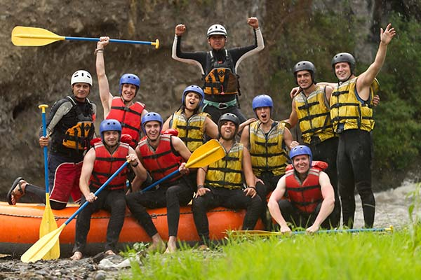
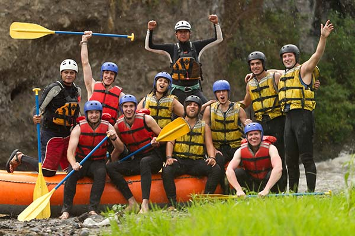
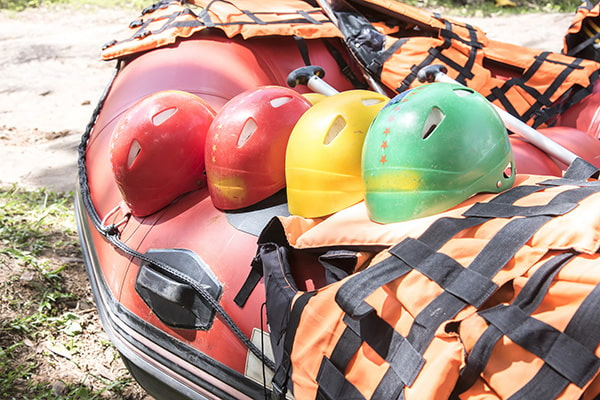
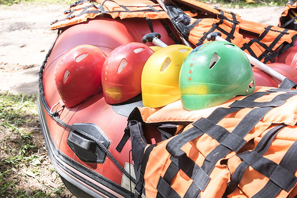

White Water Rafting

White water rafting is a thrilling and exciting adventure sport that takes you through the rapids of a river in an inflatable raft. It's a great way to experience the power of nature and test your skills as you navigate the twists and turns of the river. Whether you're a beginner or an experienced rafter, there's a trip for you. So grab your paddle, put on your life jacket, and get ready for the ride of a lifetime!
 

 
